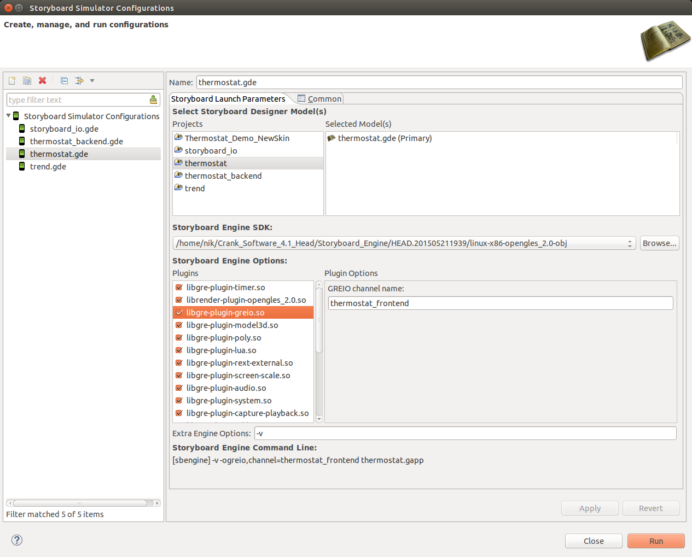

Setting up the SBIO Thermostat Demo
Compiling the Source Code
The code to drive the demo can be found in the source_code
directory of the project.
The source is straightforward and uses standard ANSI C89 types,
but requires that the include path and library path include
the path to the Crank Storyboard IO headers and libraries.
Assuming a base path to a specific Storyboard Engine distribution is
defined as SB_ROOT:
- Headers
- The Storyboard IO header file gre/greio.h is located in
the include sub-directory of the runtime engine.
- Libraries
- The Storyboard IO library libgreio.[a|so|lib|dll] is located in
the lib sub-directory of the runtime engine.
A sample Makefile for a build might look something like this:
SB_ROOT=~/Crank_Software_4.1_Head/Storyboard_Engine/HEAD.201506041238/linux-x86-opengles_2.0-obj/
SB_INC=-I$(SB_ROOT)/include
SB_LIB=-L$(SB_ROOT)/lib -lgreio
all: thermostat_backend.c
$(CC) $(SB_INC) -o thermostat_backend thermostat_backend.c $(SB_LIB)
Note: Storyboard for Linux is built as a 32 bit system, if running on a 64 bit Linux system then
you will need to do the following:
- Install the libc6-dev-i386 package to build 32-bit
- Specify '-m32' in the build command right before the '-o'
- Add in '-lpthread' to include the POSIX thread support
Building with Visual Studio
Using VS2013
- Open ThermostatIO.sln
- [Debug->ThermostatIO Properties->Configuration Properties->C/C++->General->Additional Include Directories]
Point to your installation of Storyboard Engine's include directory.
(e.g. C:\Program Files (x86)\Crank_Software\Storyboard_Engine\5.0.201702270437\win32-x86-opengles_2.0-obj\include)
- [Debug->ThermostatIO Properties->Configuration Properties->Linker->General->Additional Library Directories]
Point to your installation of Storyboard Engine's lib directory.
(e.g. C:\Program Files (x86)\Crank_Software\Storyboard_Engine\5.0.201702270437\win32-x86-opengles_2.0-obj\lib)
- [Debug->ThermostatIO Properties->Configuration Properties->Linker->Input->Additional Dependencies]
Append libgreio.lib if it is not in the list.
- Build->Build Solution
- Debug->Start Debugging
Clients building this sample for Visual Studio may require additional standard C
library headers (inttypes.h, stdint.h) depending on their version of Visual Studio.
Storyboard Suite provides the missing headers for these types in the
include/[win32|wince|wincompact7] sub-directories of the Windows
flavoured Storyboard Engine distributions.
Using the Simulator as the Target
To use the simulator in Storyboard Designer you need to make sure the
Storyboard IO (a.k.a. GREIO) channel name is aligned with the channel
name in the source code ("thermostat_frontend").
To do this you need to open up the launch configuration and set the channel name as shown.

Running an Embedded sbengine Target
On a target system you would simply pass the Storyboard IO channel name ("thermostat_frontend") on the
command line when starting sbengine.
#./sbengine -ogreio,channel=thermostat_frontend .....
Running the Demo
In order to run the Thermostat IO demonstration project, all that is required is
to first launch the Storyboard Application, either as a simulator or by using the
sbengine target command line, and then run the thermostat_backend application
from the command line.
The start-up order isn't important because the backend will wait until it can connect to the Storyboard application. However if you launch the Storyboard Application first it will not be fully usable since it requires the backend to provide temperature data
When you successfully run the frontend and backend you should see messages like the following
in the console you ran the backend from.
Trying to open the connection to the frontend
Send channel: thermostat_frontend successfully opened
Opening a channel for receive
On QNX embedded systems, it is also required that the mqueue system service
be running before either the Storyboad Engine or the thermostat_backend application
are run as it provides the communication channel infrastructure for Storyboard IO.